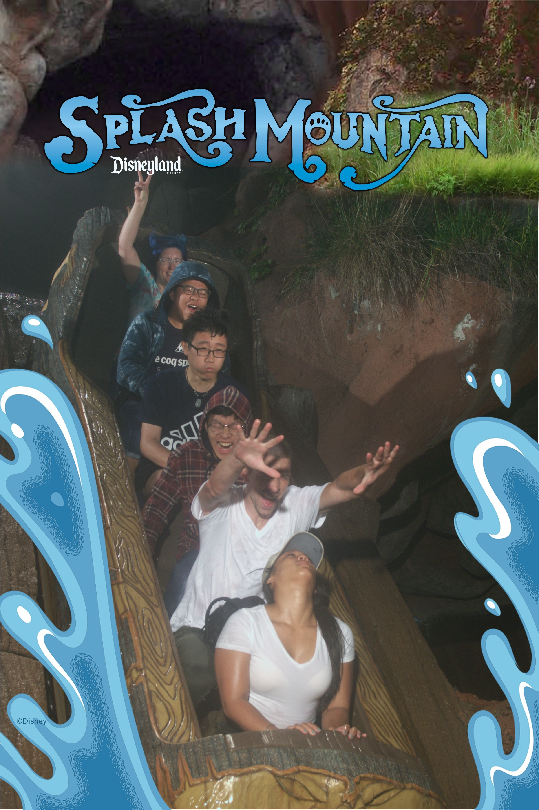

Photography
My mom always mentions that taking photos is a good habit since it can help us to remember what we did in the past so that we could review it as we become older. Therefore, I absorb her advice and begin to take some photos in my daily life. As time passed, taking photos has gradually become a habit for me. In this photography, I will show photos when I was
- (1)In travel
- (2)Visit my U.S host parents
- (3)spending time with my family

I had a host family when I came to U.S for my freshmen year in high school and I keep contact with them. We took this photo during 2019 Christmas.

I also went to their house to spend Christmas with them during this winter vocation. This is the photo we took during this X'mas.

I really like to travel when I have leisure time, and I've been to a lot of places in U.S. I took this photo in the river in Detroit when I went to watch Bucks playoffs games.

L.A is my favorite plact to go. During each summer vocation, I normally would like to go to L.A. Among all these places, Disneyland Park is my top choice. This is the photo I took when I had a ride in the Splash mountain with my friends.

I normally only have time to spend with my family during the vocation since I study abroad. However, because of the pandmemic, I have more time to stay with my family. This is th photo I took before I came back to U.S with my mom.
Because of the pandemic, I stayed at home in 2020, and eventually have the opportunity to celebrate my birthday with my family. This is the photo I took with my cousin when I celebrated my 21st birthday in her house.